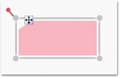
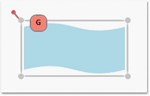

Gripper is a small rectangle which appears near the top-left corner of the node. It facilitates the node drag operation. You can drag a node by clicking and dragging the gripper. This gripper will be useful when a content of a node is specified. If this content’s IsHitTestVisible property is True clicking and dragging the node will be difficult or even impossible because all mouse operations will be handled by the Node’s Content. In this scenario Gripper will be very helpful to drag the node in the page.
Table 25: Property Table
|
Property |
Description |
Type of the property |
Value it accepts |
Any other dependencies/ sub properties associated |
|
GripperVisibility |
Gets or sets the gripper visibility. |
Dependency property |
Visibility.Hidden Visibility.Collapsed Visibility.Visible |
No |
|
GripperStyle |
Gets or sets the gripper style. |
Dependency property |
Style |
No |
Gripper Visibility
The gripper can be made visible by setting the GripperVisibility property to True.
|
[C#]
n.GripperVisibility = Visibility.Visible; diagramModel.Nodes.Add(n); |
|
[VB]
n.GripperVisibility = Visibility.Visible diagramModel.Nodes.Add(n) |

Figure 44: Gripper for Nodes
Gripper Style
Gripper can be customized using the GripperStyle property of the Node. However, on overriding the style, it is necessary to specify the Width, Height, HorizontalAlignment, VerticalAlignment and the Margin property to position the Gripper properly.
|
[XAML]
<Style x:Key="GripperStyle" TargetType="{x:Type syncfusion:Gripper}"> <Setter Property="Width" Value="30"/> <Setter Property="Height" Value="30"/> <Setter Property="HorizontalAlignment" Value="Left"/> <Setter Property="VerticalAlignment" Value="Top"/> <Setter Property="Margin" Value="10,-15,0,0"/> <Setter Property="Template"> <Setter.Value> <ControlTemplate TargetType="{x:Type syncfusion:Gripper}"> <Border Background="Salmon" CornerRadius="10" BorderThickness="2" BorderBrush="Gray"> <Label HorizontalContentAlignment="Center" VerticalContentAlignment="Center" Content="G" FontWeight="Bold"/> </Border> </ControlTemplate> </Setter.Value> </Setter> </Style> |
This can be applied to the node in the following way:
|
[C#]
node.GripperStyle = this.Resources["GripperStyle"] as Style; diagramModel.Nodes.Add(node); |
|
[VB]
node.GripperStyle = TryCast(Me.Resources("GripperStyle"), Style) diagramModel.Nodes.Add(node) |

Figure 45: Customized Gripper